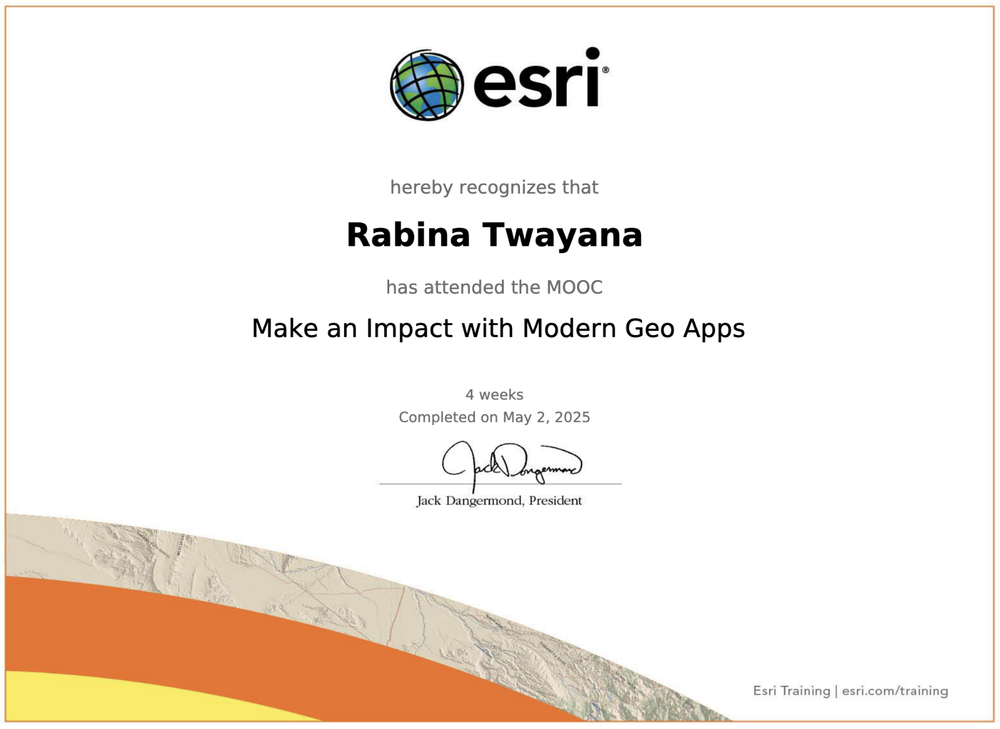

MOOC: Make an Impact with Modern Geo Apps
Course Objectives
- Transform web maps into attractive apps that anyone can use to explore and analyze data, access content galleries, and interact with map features and information.
- Build interactive, map-driven stories to share data and communicate impactfully with your audience.
- Configure interactive dashboards that combine maps and dynamic data visualizations to empower leaders, stakeholders, or the public with at-a-glance insights.
- Create immersive web apps for mobile, tablet, and desktop users that include any combination of maps, web pages, widgets, and 2D and 3D data.
Course Content
Week 1 (Instant Apps):
Learn to creae simple app in 5 minutes or less using templates for specific purposes
Exercise 1:
Create a multipurpose app
In this exercise instant web app was created.
View here:
https://mooc11.maps.arcgis.com/apps/instant/sidebar/index.html?appid=00137ce033e7466d95ba736d68589756/
Exercise 2:
Find nearby points of interest
In this exercise, web app using a template that is useful for finding focused locations within a certain distance of an address or place was created.
View here:
https://mooc11.maps.arcgis.com/apps/instant/nearby/index.html?appid=9a39b5bf03634108b660c4d807b7be9c&sliderDistance=1.5
Week 2 (StoryMaps):
Learned to create a content-rich narrative using a variety of maps, text, and other media
View here: https://storymaps.arcgis.com/stories/67bd4bf5114842d1a43735371b76ced9
Week 3 (Dashboards):
Learned to create a mobile-optimized, single-screen dashboard offering interactive status updates and real-time data capabilities
Exercise 1:
Create a mobile dashboard from desktop dashboard
In this exercise, geographic information and data visualizations are presented in a single view. Data visualizations are configured as elements, such as maps, lists, and charts.
View here:
https://mooc11.maps.arcgis.com/apps/dashboards/fff7acacb8ae4472af7bf51efc356366
Exercise 2:
Configure an advance dashboard
In this exercise, dashboard was created making the copy of existing dashboard and configured further.
View here:
https://mooc11.maps.arcgis.com/apps/dashboards/2f641af7a590413b86873b00e8c4b69a
Week 4 (Experience Builder):
Learn to create single or multi-page app using ArcGIS Experience Builder.
Exercise 1:
Create a web experience
In this exercice, web experience was created from a template by adding and configuring widgets to the web experience, which will allow you to see information associated with locations in the map, zoom to different locations, swipe to see what is underneath a layer, and search for information in a table.
View here:
https://experience.arcgis.com/experience/787cc240560d415fb0bb742dbc0062be
Exercise 2:
Discover a multipage web experience
In this exercise, existing multi-page web experience was copied and enhanced by adding a page, updating navigation options, and optimizing the experience.
View here:
https://experience.arcgis.com/experience/a47ef19626114018874ca74bde5e7256/page/
Each session consists of atleast one practical exercise and following are the some screenshots of app developed on practical sessions

Make an Impact with Modern Geo Apps (02 May, 2025). MOOC Certificate . Obtained from Esri Academy